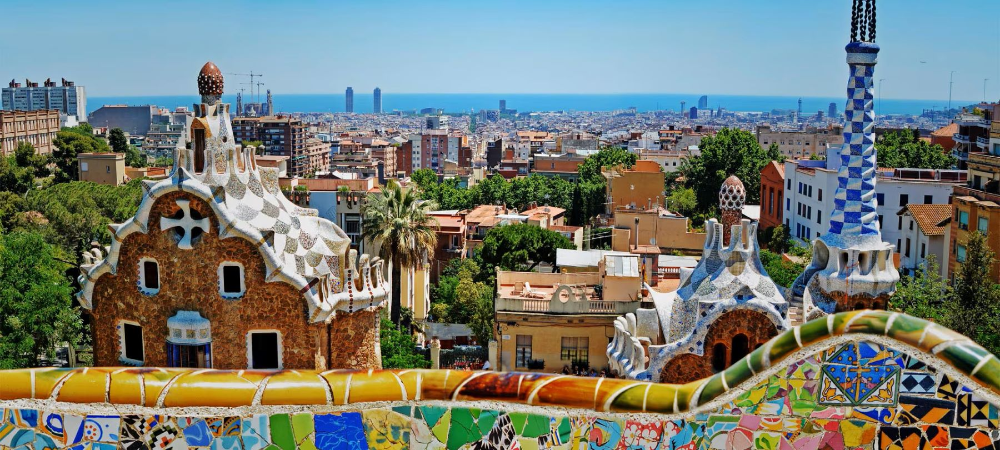
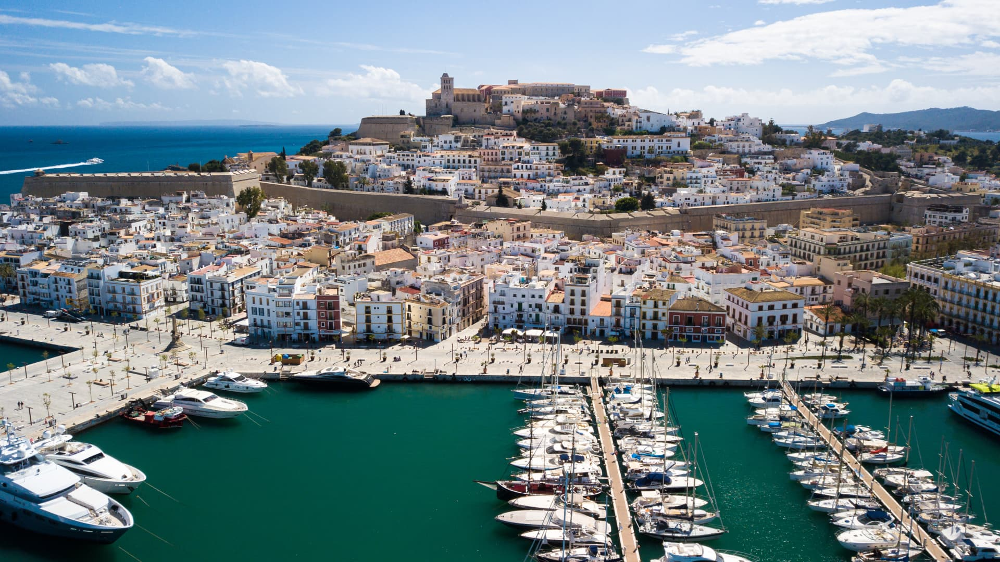

Visite lo mejor de España: Madrid, Barcelona, la Costa Brava y Andalucía
Madrid:
Visitas guiadas al Museo del Prado y al Palacio de la Zarzuela.
Recorra los lugares más importantes de la capital madrileña.

Barcelona:
Recorra los mejores lugares de Barcelona.
La Sagrada Familia y el Parque Güell, el Camp Nou


Recorrido por la Costa Brava y las Baleares (5 días)
Visite los principales balnearios de Europa y las Islas Baleares haciendo escala en Ibiza.


Sevilla y Granada (4 días)
Recorra las principales ciudades de Sevilla.
Visite la Alhambra, recorra los principales destinos de Granada